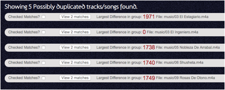
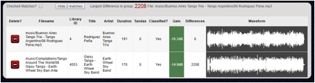
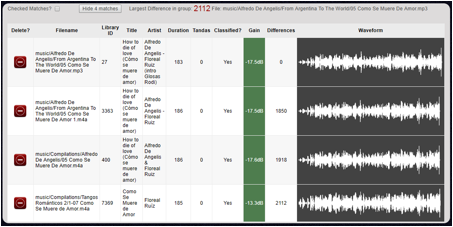
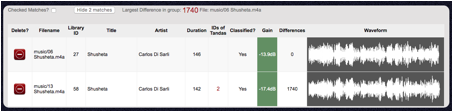
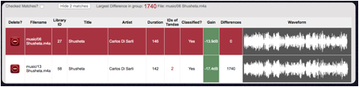
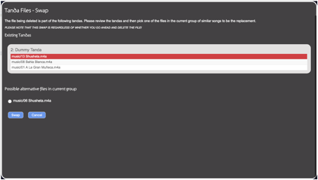

Do not attempt to run this program whilst either loading new songs into the library or whilst trying to use any other Tanda Player application. Only use when the system is stable and idle. Make sure you have stopped playing any music.
This application will not work well if your music collection is mostly modern recordings (as a result of modern recording practices) – but older recordings do work well!
It is possible to switch songs in tandas with this application regardless of whether you then proceed to delete any files – the Tanda song switch is not dependent upon any other actions in this application.
This is supplied as is. Try it – if it works for you then “good” otherwise don’t use it.
This application tries to find the same recording of a song in different files. Once found, the user may remove unwanted versions of the song. If this song is in a Tanda already, the user is prompted to find a replacement song from the other recordings to keep the Tanda valid. Playlists are not updated!
This application is offered as an optional use utility only. It is not a requirement that it is used.
Too many duplicate songs slow down the user whilst classifying their collection because they will have to listen to and classify the same recordings over and over again with no real benefit. This utility may help in locating these duplicates early enough that you do not need to classify the duplicated songs.
The approach used is simple enough for the computer inside the Tanda Player combined with the power of the web Browser on your PC or laptop to perform. The simple approach is, as a consequence, error prone and will identify possible matches that are not matches at all. However, the results are quite good and may be useful in general even though it may report significant numbers of false matches.
The algorithm is often able to spot the same recording even though they have been encoded in different file formats such as MP3 or FLAC and can even show up matches on recordings where the re-mastering process in the recording studio have changed the playback speed of the recording to make the tempo match some ideal or where the sound has been modified to remove hiss or similar artefacts in the original.
The algorithm essentially “counts how many pixels differ between the audio waveform files” that represent the song. It uses a few tricks such as limited-time-warping to try to match up the waveforms as best as it can. However, clearly two waveforms may differ by the same number of pixels but belong to very different songs. Hopefully this is obvious to the user when it occurs and it should be ignored.
Recording techniques have changed a lot recently with the use of computers in the recording studio. This application works reasonably well on “old” Tango recordings where the waveforms are dynamic and shapely. It does not work at all well on modern recordings where sound engineers have used audio-processing techniques to get the maximum volume out of a song and which results in quite solid looking waveforms.
A usable waveform has lots of variation like this one:
An unusable waveform – and one which cannot be easily compared accurately to other similar waveforms – looks like this:
As a downside of the compromises used to develop the algorithm so that it can run in the Tanda Player in a reasonable time frame, the algorithm will make some invalid matches and some songs will look similar to a very large number of other songs as far as the system is concerned. When a large number of songs appear to match one song it is very unlikely this is true - however, it is often useful to look down the list of these matches as within the list there may be pairs of songs which are duplicates even if they are hidden among other invalid matches. In other words, when there are invalid matches among plausible matches, just ignore the invalid ones.
If you find the results useful, use them, if you do not, then don’t use it. Other software tools are available that attempt to do this sort of detection using sophisticated algorithms but these require the power of desktop computers to work – the Tanda Player is just not powerful enough.
· A backup – please backup your USB device to another computer or disk before starting to remove files!
· Good headphones connected directly to the Tanda Player’s output. Or connect the Tanda Player to a good sound system and turn the volume up. The goal is to be able to hear subtle differences in sound quality (changes in Hiss levels or quality of low notes or quality of the audio attacks as dramatic pieces are played and stereo versus mono recordings) which is not possible at low levels and on poor quality sound systems.
· A good size computer monitor makes reading the results easier
· A powerful desktop computer makes the processing faster
· The waveform files are approximately 6 Kbytes in size. Your USB device will need enough free disk space to hold one waveform file for every music file you have. As a rough guide, a collection of 10,000 songs will require 60 Mbytes.
· To save the signatures of these waveforms as well as the current state of the application on the USB device requires an additional 30 Mbytes.
· Lots of time – The waveforms can take several seconds (up to 10 seconds) to produce for each file – the actual time depends on the file size and the compression algorithm / file type used for the original file. At approximately 10 seconds per file a 10,000 song collection will take approximately 27 hours!
· A notebook to keep track of what you think may need checking later such as any modified tandas.
The processing requires the waveform files for all the songs in the library. Under normal circumstances, the Tanda Player only generates these as required. I.e. if the configuration does not require these (i.e. not for headphone use or during live player use) these files will not exist yet. If they have been produced already these files are usable by this process.
Step 0 clears all previous results and initialises the required files used to store results
Step 1 is therefore to generate all the required image files.
It is invoked by clicking this button:
This step also creates a “fingerprint” or “signature” of the waveform which can then be used for similarity testing. This process may take quite a long time to run the first time. Subsequent runs (i.e. after you add a few new songs to your library) may just take a few seconds to complete. Therefore, for the first run it is recommended to run this overnight. Because this process runs both in the Tanda Player and in the Web Browser both need to be left switched on for the entire time and in particular, the computer on which the web browser is being used must be set up so that it will not go to sleep after an hour or so to save power. Simply go into your computer settings for power saving or similar and disable these temporarily.
Once it has completed it is recommend that you save the state of the application. However, even without saving the state, subsequent runs of the same process will complete much more quickly because the underlying waveform files will now exist on the USB device and only missing signatures will be generated.
Step 2 is simply to go through the results.
The results are presented as a list of files:

For each group of possibly matching songs, there is a check-box you can tick once you have looked at this group. This is just for your own use and allows you to see which you have done and which are still to do. These check boxes are saved when you click the save state button:
You must save the state before you start work on the list!
The groups are centered on a file whose filename is given in the group row. The large red number on the row is a count of how many pixels were different between the given filename and the most different possible match to this file.
To see the matches click the view button. To hide the details again, click the same button (which will rename itself to “hide”).
Please note that the songs with a difference of zero
are most likely to be exact copies of the original file. However, ripping the same song from a CD and converting it to an MP3 or M4A file for example will produce differences because, MP3 in particular, people often choose to compress their music collection to take less disk space at the expense of losing some of the data in the original file. The compression process attempts to remove sounds that the human ear will not miss but these sounds may show up in the waveforms and so different compression levels and different file formats will lead to different waveforms. Because of these differences, the process requires a level of tolerance when comparing waveforms and this is set by the slider:
The default value will result in a few mis-matches but it also allows matches where the tempo is different or some processing has taken place to remove hiss etc. Lower values will result in more accurate matches but may miss some too! Once a new value is set, click the re-scan button to use this new level when comparing files. You are encouraged to try larger values once you have cleared the more common matches.
The scanning process speed (time taken) depends on the size of the collection. The algorithm used is extremely simple: it compares each file with each of the others! Therefore the more you have, the longer the scan for each file takes. As a guide, a collection of 10,000 songs can be scanned in under 3 hours.

The above picture shows the results for two songs where the waveforms (to a human eye) are not truly similar. By looking at the waveform’s shape and the filenames and titles and artists etc. it should be possible to reject this match.
If it is not truly obvious, then clicking the rows for each song will cause them to play and it should be obvious then that these do not match.
Simply “hide” the details again and check the box to show that you have looked at this match so that you do not need to do it again. Then move on to the next match.

The above shows a case where four songs appear to match. A quick look at the waveforms shows that at least the first three are likely to be the same, the last one is very similar but who knows! (Note that in the above, the first file is 3 seconds shorter than the second! – possibly the result of one file or the other being re-mastered (sped up or slowed down) or it could be leading or trailing silence)
The “Differences” is a count of differing pixels to the song the group is based on. It must not be used as a way of determining how good a recording it is – listen to the song! (For example, if the really bad version of a song was the one the group was based on then it would have a difference score of zero and all the good versions would have high scores indicating that they are different from the bad version – The score is just an indicator of similarity to the first song in the list and nothing else!) If the count is zero it is extremely likely that they are identical copies of the same song and only one of them needs to be kept. For other differences, you may decide to keep a few copies if for example the sound quality differs because you may want either good or bad sounds to match up other songs when making a tanda. However, each copy of a song will require you to go through and classify it and so the more you leave, the more classifying you will need to do later!
The “gain” value should be between 0 and -20 dB in order to not lose output sound levels from the Tanda Player. The player uses the quietest song in your collection as the reference song and this controls the maximum output possible. See the normalisation page in the setup app. If you have a file whose gain is too low (below -20 dB) it will be shown either in orange as a warning or red and these should be either deleted if better versions are available or these should be removed and replaced with normalised versions of these recordings – normalisation can be achieved using commercial software.
When listening alone does not allow the best version to be identified, then the following rough guide may be used – but if you cannot tell by listening it probably does not matter!
· Keep the song which is easiest for Tanda Player to play (see below)
· Keep the least distorted version – for example, files downloaded from sites such as YouTube are likely to suffer in sound quality due to the sites adjustment of uploaded files. Therefore if possible, remove the downloaded versions and keep those from other sources.
· Keep the song which has a green background to the Gain figure (‘Green’ indicates a value between 0 and -20 dB) (See below)
· Keep the song whose waveform has the most variation in it – this is likely to sound more dynamic
· Keep the song you have already classified especially if it is already in a tanda!
· Keep the best audio file format (see below).
The Tanda Player is not a powerful computer and some music file compression algorithms require a lot of computing power to unpack the data in them in order to play them. The worst format identified to date is the “APE” file format. Although technically a good format in that it is does not lose any data quality it is computer-intensive to play and Tanda Player can hesitate or skip during playback of these files. It is recommended therefore that for the Tanda Player’s version of these files you should make either a FLAC or better still a M4A file with parameters set to keep a high quality if not lossless.
Also, at the time of writing, the Tanda Player sends the files to the user’s own web browser for playing through headphones and APE files are not generally supported and so the DJ will not be able to listen to these on headphones!
Keep the files with the formats that lose the least information. Typically MP3 files from a few years back are likely to have been created to preserve disk space at the cost of losing data. Also, MP3 files cannot be edited and re-saved without losing more data and eventually ending up with a file that sounds horrible. So when other formats are available, delete the MP3 version. By contrast, FLAC files are lossless in terms of data and are easy to play and so these are a good option. In the middle of the pack are M4A files which are capable of being very high quality with no loss of sound quality (these can be edited again and again with virtually no loss in sound quality). However, they can still be used to compress heavily resulting in just as poor files as MP3 can and so listen to all available options and pick one.
Author’s Opinion:
Do not be tempted to convert files from one format to another!
MP3 files lose too much data in their creation to be able to be re-converted. Do not attempt to re-convert a file that has been an MP3. As a rule the compression algorithm for MP3 throws away about 90% of the data leaving just 1 Mbyte of data for 1 minute of music.
FLAC by comparison throws nothing away in the creation process and so, like WAV files they are perfect copies of the original and if need be, they can be reproduced into any other format - so these are good to keep - unless you are short of disk space.
M4A is similar to MP3 in that it is a compression algorithm but unlike MP3, you can open them up and re-convert them in some way and re-save as M4A without significant loss - tests have shown that you can re-encode from M4A back to M4A about 100 times before you lose too much sound quality. Also people generally use M4A more like a ZIP file for documents, they have the settings which make it possible to get back nearly everything perfectly.
So DO NOT CONVERT anything. Keep MP3 if it is the best version of a song!
Otherwise, if you have FLAC and MP3, delete the MP3, if you have FLAC and M4A keep the FLAC, if you have M4A and MP3 then keep the M4A etc. BUT ONLY IF THE FILE BEING DELETED IS NOT AS GOOD A VERSION OF THE SONG! It’s OK to delete a FLAC file and keep an MP3 if that is the better version in your opinion.
But as a special note: if you have APE files (which like
FLAC does not lose anything in the creation) and you have an M4A or MP3, then
remove the APE file. Tanda Player just is not powerful enough to keep up
with the processing required to decode these in real time whilst performing all
the other actions such as manipulating playlists or adjusting volumes etc.
Also, your laptops or computers will not play APE files through the web
browser, so you will not be able to listen to them on headphones - this would
require the Tanda Player to convert these on the fly to say M4A for you to
listen and that is yet more work – As a result, APE is not fully supported
even though technically it can play them. Perhaps the more powerful
future version using a Raspberry Pi 3B+ version will be able to cope better
with these but for now, avoid them if possible. As a contradiction to the
above: If you only have APE versions,
then perhaps consider converting these into FLAC or M4A using some other
software.
Note too that the differences score is not an indication of quality of the song. Imagine you pick up a random thing - now describe how different other things are to it. An identical thing would have zero differences, and the more the differences increase, the less like the original item it is - but remember, the original thing is still selected at random so it might be a rubbish version of the song! So if you listen to the songs and decide to keep the one with the most differences - that’s OK - you’ve said its the best version - the difference score means nothing apart from a way to group items that may be similar.
To mark a song as not required, click the delete button on the row. The row will turn red. It is not deleted at this point – just marked. Clicking the save state button will keep a record of which ones you have marked for deletion.
Step3 - For each file you delete that is part of a Tanda, you need to state which file to use as the replacement.

If you choose to remove the version that is not currently in a Tanda, it will simply be highlighted in red.

However, if you decide to remove the version that is in the Tanda already, then a window will appear in which you can see the songs in the tandas which include this song and also a list of the songs in this current group . If you wish to proceed, you can select an alternative song and this will be automatically written to the tandas in place of the original song – NOTE THIS WILL SAVE IMMEDIATELY IF YOU PRESS THE SWAP BUTTON regardless of whether you then go on to actually delete the files using the “Delete ??? Versions” button at the top of the page.

This window appears because the song being deleted has been added to one or more tandas. Each Tanda is shown and the file being removed is highlighted. You can simply cancel and no action will take place or you can swap the highlighted file with a selected alternative. If you mark for deletion all but one song before deleting the one already in the tandas then this will be the only version given to choose from. To make the swap you must select the file!
NOTE you may find the main list is redrawn and you lose your place. Therefore make a note where you were or use the checkboxes to help identify which have been examined so far.
Step 4 – Once you are happy with all the deletions you plan on making, click the delete button:
This step will physically delete the files from your USB device. A re-start of the Tanda Player is required, once it has finished, to clean up the library.
This may result in some tandas becoming invalid if alternative files were not selected. Invalid tandas can be searched for by searching for the word ‘invalid’ and once suitable replacements for the files have been found, the word ‘invalid’ can be removed from the tanda’s name prior to saving.
Invalidated playlists are not easily fixed!
Once complete, the “restart” button is located in the top left corner out of the way!
To re-process after making changes/deletions, please re-start the Tanda Player and clear the system by performing a full reset. The creation of signatures is then required etc. but it should be quicker the second time around.